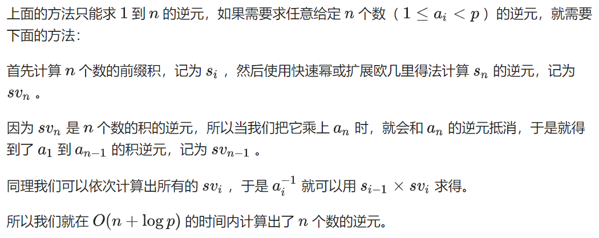
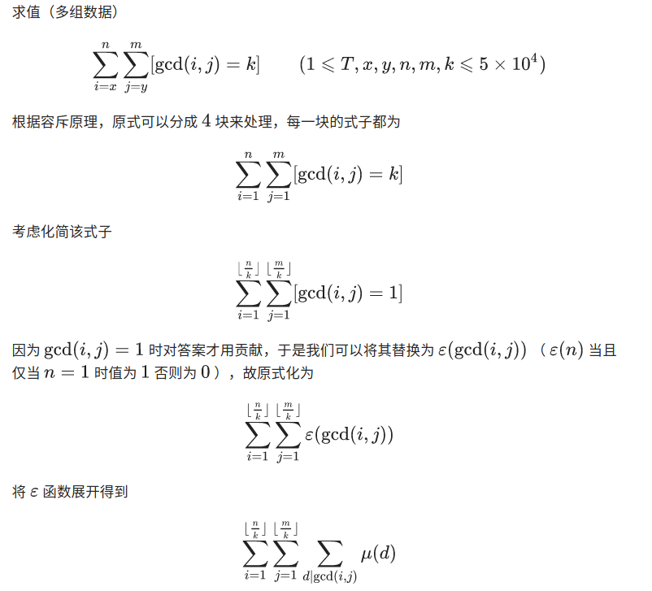

数论
循环小数化最简分数
日本野口哲典在《天哪！数学原来可以这样学》中介绍了如何将循环小数转化成分数的方法，现介绍如下：
1.循环小数0.7272……循环节为7，2两位，因此化为分数为72/99=1/8.即有几位循环数字就除以几个9。又如0.123123……循环节为1，2，3三位，因此化为分数为123/999=41/333.
这种方法只适用于从小数点后第一位就开始循环的小数，如果不是从第一位就开始循环的小数，必须用下面的方法。
2.循环小数0.41666……先把0.41666……乘以100得41.666……，可以理解为41+0.666……，所以写成分数为41+6/9=41+2/3=125/3.因为开始乘以了100，所以再除以100，即125/3÷100=125/300=5/12.
https://www.lanqiao.cn/problems/1051/learning/
from math import gcd
x, y = map(int, input().split())
s = input()
n = int(s)
if x == 1:
a = 10 ** len(s) - 1
f = gcd(n, a)
print(n//f, a//f)
else:
m = int(s[x-1:y])
a = 10 ** (y-x+1) - 1
m += a * int(s[:x-1])
f = gcd(m, a)
m //= f
a = a // f * (10 ** len(s[:x-1]))
f = gcd(m, a)
print(m//f, a//f)
GCD、LCM
欧几里得算法求gcd
$$gcd(a, b) = gcd(b, a \bmod b)$$
int gcd(int a, int b) {
return b == 0 ? a : gcd(b, a % b);
}
$$gcd(a, b) × lcm(a, b) = a × b$$
一次求多个数的gcd：$$gcd(a_1, a_2, a_3, a_4) = gcd(gcd(gcd(a_1, a_2), a_3), a_4)$$
一次求多个数的lcm：$$lcm(a_1, a_2, a_3, a_4) = lcm(lcm(lcm(a_1, a_2), a_3), a_4)$$
辗转相减求gcd
$$\gcd(35, 14) = \gcd(21, 14) = \gcd(14, 7) = \gcd(7, 7) = \gcd(7, 0) = 7$$
gcd推导
$$\gcd(a,b) = 1, \space \gcd(a, c) = 1 \iff gcd(a, bc) = 1$$
$$\gcd(a, b) = 1 \iff \gcd(a^m, b^k) = 1$$
辗转相减求gcd：$$\gcd(a, b) = \gcd(a, a + b)$$
N*M的GCD矩阵打表
$$gcd[i][j] = \gcd(i, j)$$
int gcd[1001][1001] = {0};
void get_gcd(int n, int m) {
for (int i = 1; i <= 1000; ++i) {
for (int j = 1; j <= 1000; ++j) {
if (!gcd[i][j]) {
for (int k = 1; k * i <= n && k * j <= m; ++k) {
gcd[k * i][k * j] = k;
}
}
}
}
}
扩展欧几里得
裴蜀定理，又称贝祖定理（Bézout's lemma）
设$$a,b$$ 是不全为零的整数，则存在整数$$x,y$$ , 使得$$ax+by=\gcd(a,b)$$ .
/**
* 扩展欧几里得算法
* ax + by = gcd(a, b)
* x、y是方程的一组整数解
* @return gcd(a,b)
*/
int ex_gcd(int a, int b, int &x, int &y) {
if (!b) {
x = 1;
y = 0;
return a;
}
int gcd = ex_gcd(b, a % b, x, y);
int temp = x;
x = y;
y = temp - (a / b) * y;
return gcd;
}
通过ex_gcd得到$$ax+by=\gcd(a, b)$$的一组可行整数解$$x_0, y_0$$后：
- $$ax+by=\gcd(a, b)$$的通解为
$$ x = x_0 + \frac{b}{\gcd(a, b)}t, y=y_0 - \frac{a}{\gcd(a,b)}t,t\in\mathbb{Z}，两个式子中的t相同 $$
-
求$$ax+by=c$$的解
若$$c \bmod \gcd(a,b) =0$$，则方程存在整数解，否则不存在整数解。
一组整数解：$$x_1 = x_0\frac{c}{\gcd(a,b)}, y_1=y_0\frac{c}{\gcd(a,b)}$$
通解 $$ x = x_1 + \frac{b}{\gcd(a, b)}t, y=y_1 - \frac{a}{\gcd(a,b)}t,t\in\mathbb{Z}，两个式子中的t相同 $$
扩展欧几里得解线性同余方程
形如$$ax \equiv c \pmod b$$ 的方程被称为 线性同余方程 (Congruence Equation)。
定理 1 ：方程$$ax+by=c$$ 与方程$$ax \equiv c \pmod b$$ 是等价的，有整数解的充要条件为$$\gcd(a,b) | c$$ (贝组定理)。
根据定理 1，方程 $$ax+by=c$$，我们可以先用扩展欧几里得算法求出一组$$x_0,y_0$$ ，也就是 $$ax+by=\gcd(a,b)$$ ，然后两边同时除以$$\gcd(a,b)$$ ，再乘 $$c$$。然后就得到了方程$$\frac{acx_0}{\gcd(a,b)}+\frac{bcy_0}{\gcd(a,b)}=c$$ ，然后我们就找到了方程的一个解。
定理 2 ：若$$\gcd(a,b)=1$$ ，且 $$x_0,y_0$$ 为方程 的一组解，则该方程的任意解可表示为$$x = x_0 + bt \space , y = y_0 - at$$： , 且对任意整数 $$t$$都成立。
根据定理 2，可以求出方程的所有解。但在实际问题中，我们往往被要求求出一个最小整数解，也就是一个特解 $$x, t = \frac{b}{\gcd(a,b)}, x=(x \bmod t + t) \bmod t$$。
int ex_gcd(int a, int b, int& x, int& y) {
if (b == 0) {
x = 1;
y = 0;
return a;
}
int d = ex_gcd(b, a % b, x, y);
int temp = x;
x = y;
y = temp - a / b * y;
return d;
}
bool liEu(int a, int b, int c, int& x, int& y) {
int d = ex_gcd(a, b, x, y);
if (c % d != 0) return 0;
int k = c / d;
x *= k;
y *= k;
return 1;
}
费马小定理
若p为质数，a为任意自然数，则$$a^p \equiv a \pmod p$$
若p为质数，$$\gcd(a,p) = 1, 则a^{p-1} \equiv 1 \pmod p$$
乘法逆元
若线性同余方程$ax\equiv1\pmod b$，则称x为$a\bmod b$ 的逆元，记作$a^{-1}$
快速幂+费马小定理求逆元：b为素数时，逆元$x=a^{b-2}$
$\frac a b$为分数，求$ab^{-1} \bmod p$ $$ ab^{-1} \equiv a * b^{p-2}\pmod p $$
扩展欧几里得求乘法逆元
void exgcd(int a, int b, int &x, int &y) {
if (b == 0) {
x = 1, y = 0;
return;
}
exgcd(b, a % b, y, x);
y -= a / b * x;
}
//求逆元
int gao(int a, int p) {
int x, y;
exgcd(a, p, x, y);
return (x % p + p) % p;
}
求1到n每个数mod p的乘法逆元
luogu3811
#include <stdio.h>
long long inv[3000008];
void calc_inv(int n, int p) {
inv[1] = 1;
for (int i = 2; i <= n; ++i) inv[i] = (long long)(p - p / i) * inv[p % i] % p;
}
int main() {
int n, p;
scanf("%d %d", &n, &p);
calc_inv(n, p);
for (int i = 1; i <= n; ++i) printf("%lld\n", inv[i]);
return 0;
}
求阶乘的乘法逆元
long long inv[10000000];
const int mod=1000000007;
void getinv(long long n)
{
long long inv_max=1;
///求阶乘的最大值
for(int i=1;i<=n;i++) inv_max=inv_max*i%mod;
///求阶乘最大值的逆元
inv[n]=qmod(inv_max,mod-2);
for(int i=n-1;i>=1;i--) inv[i]=inv[i+1]*(i+1)%mod;
}
线性求N个数的逆元
s[0] = 1;
for (int i = 1; i <= n; ++i) s[i] = s[i - 1] * a[i] % p;
sv[n] = qpow(s[n], p - 2); // 当然这里也可以用 exgcd 来求逆元,视个人喜好而定.
for (int i = n; i >= 1; --i) sv[i - 1] = sv[i] * a[i] % p;
for (int i = 1; i <= n; ++i) inv[i] = sv[i] * s[i - 1] % p;
通过乘法逆元算除法取模
由费马小定理求除法取模（m必须是质数）：
$$\frac{1}{a} = \frac{1}{a} a \cdot a^{m-2} = a^{m-2} \pmod m $$
因此 $$ \frac{a}{b} = \frac{a}{b} \cdot b \cdot b^{m-2} = a \cdot b^{m-2} \pmod m $$
模运算
基本性质
- 若p|(a-b)，则a≡b (% p)。例如 11 ≡ 4 (% 7)， 18 ≡ 4(% 7)
- (a % p)=(b % p)意味a≡b (% p)
- 对称性：a≡b (% p)等价于b≡a (% p)
- 传递性：若a≡b (% p)且b≡c (% p) ，则a≡c (% p)
运算规则
模运算与基本四则运算有些相似，但是除法例外。其规则如下：
- (a + b) % p = (a % p + b % p) % p （1）
- (a - b) % p = (a % p - b % p ) % p （2）
- (a * b) % p = (a % p * b % p) % p （3）
- a ^ b % p = ((a % p)^b) % p （4）
- 结合律：((a+b) % p + c) % p = (a + (b+c) % p) % p （5）
((ab) % p * c)% p = (a * (bc) % p) % p （6）
- 交换律：(a + b) % p = (b+a) % p （7）
(a * b) % p = (b * a) % p （8）
- 分配律：(a+b) % p = ( a % p + b % p ) %p（9）
- ((a +b)% p * c) % p = ((a * c) % p + (b * c) % p) % p （10）
重要定理
- 若a≡b (% p)，则对于任意的c，都有(a + c)/ ≡ (b + c) (%p)；（11）
- 若a≡b (% p)，则对于任意的c，都有(a * c) ≡ (b * c) (%p)；（12）
- 若a≡b (% p)，c≡d (% p)，则 (a + c) ≡ (b + d) (%p)，(a - c) ≡ (b - d) (%p)，(a * c) ≡ (b * d) (%p)； （13）
交换律
$$a + b \equiv b+a \pmod k$$
$$a×b \equiv b × a \pmod k$$
结合律
$$(a +_k b) +_k c \equiv a +_k (b +_k c)$$
$$(a ×_k b) ×_k c \equiv a ×_k (b ×_k c)$$
分配律
$$(a +_k b) ×_k c \equiv a ×_k c +_k b ×_k c$$
$$a +_k b = a \bmod k +_k b \bmod k$$
$$a ×_k b = a \bmod k ×_k b \bmod k$$
$$a_1 + a_2 + ... + a_n \equiv a_1 \bmod k + a_2 \bmod k + ... + a_n \bmod k \pmod k$$
$$a_1 × a_2 × ... × a_n \equiv a_1 \bmod k × a_2 \bmod k × ... × a_n \bmod k \pmod k$$
$$-a \bmod k = -(a \bmod k) = k - (a \bmod k)$$
$$a^b \equiv (a \bmod k)^b \pmod k$$
$$若 d = gcd(a_1, a_2, ..., a_n)，a_1x_1 + a_2x_2 + ... + a_nx_n = l, 则 \frac{a_1}{d}x_1 + \frac{a_2}{d}x_2 + ... + \frac{a_n}{d}x_n = l$$
$$(x \bmod (ab)) \bmod a = (x \bmod a) \bmod (ab) = x \bmod a$$
CF1359E 若对任意1-k的排列$$p_1, p_2, ...,p_k$$均满足
$$(((x\bmod a_1)\bmod a_2)…\mod a_{k−1})\bmod a_k=(((x \bmod a_{p_1}) \bmod a_{p_2})… \bmod a_{p_{k−1}}) \bmod a_{p_k}$$
$$1≤a_1<a_2<⋯<a_k≤n$$ 则$$a_1, a_2, ..., a_k$$这k个数都是$$a_1$$的倍数
因数
因数个数定理
对于一个大于1正整数n可以分解质因数：
$$n = \prod \limits_{i=1}^k p_i^{a_i}$$
则n的正约数的个数就是$$f(n) = \prod \limits_{i=1}^k (a_i+1)$$

void pre() {
d[1] = 1;
for (int i = 2; i <= n; ++i) {
if (!v[i]) v[i] = 1, p[++tot] = i, d[i] = 2, num[i] = 1;
for (int j = 1; j <= tot && i <= n / p[j]; ++j) {
v[p[j] * i] = 1;
if (i % p[j] == 0) {
num[i * p[j]] = num[i] + 1;
d[i * p[j]] = d[i] / num[i * p[j]] * (num[i * p[j]] + 1);
break;
} else {
num[i * p[j]] = 1;
d[i * p[j]] = d[i] * 2;
}
}
}
}
筛法求因数和
f[i]表示i的约数和，g[i]表示i的最小质因子的$$p + p^1 + p^2 + ... + p^k$$
void pre() {
g[1] = f[1] = 1;
for (int i = 2; i <= n; ++i) {
if (!v[i]) v[i] = 1, p[++tot] = i, g[i] = i + 1, f[i] = i + 1;
for (int j = 1; j <= tot && i <= n / p[j]; ++j) {
v[p[j] * i] = 1;
if (i % p[j] == 0) {
g[i * p[j]] = g[i] * p[j] + 1;
f[i * p[j]] = f[i] / g[i] * g[i * p[j]];
break;
} else {
f[i * p[j]] = f[i] * f[p[j]];
g[i * p[j]] = 1 + p[j];
}
}
}
for (int i = 1; i <= n; ++i) f[i] = (f[i - 1] + f[i]) % Mod;
}
最小质因数打表
int min_prime[10000007] = {0};
/**
* 若i为质数，则min_prime[i] = 0
* 否则mim_prime[i] = 最小质因数
*/
void get_min_prime_factor() {
// 最小质因数i*i < 10000000
for (int i = 2; i <= 3163; ++i) {
if (min_prime[i] == 0) {
for (int j = i * 2; j <= 10000000; j += i) {
if (min_prime[j] == 0)
min_prime[j] = i;
}
}
}
}
质因数分解并统计个数
std::unordered_map<long long, long long> factor_nums;
for (long long i = 2; i * i <= x; ++i) {
while (x % i == 0) {
++factor_nums[i];
x /= i;
}
}
if (x > 1) ++factor_nums[x];
如果有多个数要分解（如多组输入），则需要提前筛出素数。(见数论练习)
//
// Created by jiang on 2020/12/2.
// cf1454D：把一个数n分解为若干个数的乘积a1*a2*...ak，使得 a_i >= 1且 a_{i+1} 能被a_i整除
// 且k尽可能多
// 先质因数分解，记最多的质因数p有m个。则数列p, p, p, ... (n/p^(m-1)) 即为所求
#include <cstdio>
#include <vector>
#include <unordered_map>
constexpr int MAX_N = 100005;
std::vector<long long> primes;
bool not_prime[MAX_N] = {false};
void euler_thieve() {
for (int i = 2; i < MAX_N; i++) {
if (!not_prime[i]) {
primes.push_back(i);
}
for (int j = 0; j < primes.size() && i * primes[j] < MAX_N; ++j) {
not_prime[i * primes[j]] = true;
if (i % primes[j] == 0) {
break;
}
}
}
}
auto get_num_factors(long long n) {
std::unordered_map<long long, long long> num_factors;
for (auto &prime : primes) {
if (prime * prime > n) break;
if (n % prime == 0) {
do {
n /= prime;
++num_factors[prime];
} while (n % prime == 0);
}
}
if (n > 1) ++num_factors[n];
return num_factors;
}
int main() {
euler_thieve();
int t;
scanf("%d", &t);
while (t--) {
long long n;
scanf("%lld", &n);
auto num_factors = get_num_factors(n);
long long max_k, max_nums = 0;
for (auto &kv : num_factors) {
if (kv.second > max_nums) {
max_nums = kv.second;
max_k = kv.first;
}
}
long long divisor = 1;
printf("%lld\n", max_nums);
for (int i = 0; i < max_nums - 1; ++i) {
printf("%lld ", max_k);
divisor *= max_k;
}
printf("%lld\n", n / divisor);
}
return 0;
}
bool is_prime[100006];
std::vector<int> primes;
void sieve(int n) {
memset(is_prime, true, sizeof(is_prime));
for (int i = 2; i <= n; ++i) {
if (is_prime[i]) {
primes.push_back(i);
for (int j = i + i; j <= n; j += i) {
is_prime[j] = false;
}
}
}
}
std::unordered_map<int, int> factor_nums;
void factor(int x) {
// c++11能用for-range循环
for (int i = 0; i < primes.size() && primes[i] * primes[i] <= x; ++i) {
while (x % primes[i] == 0) {
++factor_nums[primes[i]];
x /= primes[i];
}
}
if (x > 1) ++factor_nums[x];
}
pollard_rho 分解大质因数
//
// Created by jiang on 2020/8/15.
//
#include <iostream>
#include <ctime>
#include <algorithm>
#include <map>
#define TEST_TIMES 8 // 米勒罗宾素性测试次数
std::map<long long, int> factor_nums;
/**
* 快速乘法
* @param a
* @param b
* @param p
* @return
*/
long long mul(long long a, long long b, long long p) {
long long ans = 0;
a %= p;
while (b) {
if (b & 1)ans = (ans + a) % p;
b /= 2;
a = (a + a) % p;
}
return ans;
}
/**
* 快速幂取模
* @param a
* @param b
* @param p
* @return
*/
long long pow(long long a, long long b, long long p) {
long long ans = 1;
a %= p;
while (b) {
if (b & 1) ans = mul(a, ans, p);
b /= 2;
a = mul(a, a, p);
}
ans %= p;
return ans;
}
/**
* 米勒罗宾素性测试
* @param n 测试的大数
* @param repeat 测试重复次数
* @return 大概率是素数：true；不是素数：false
*/
bool miller_rabin(long long n, int repeat) {
if (n == 2 || n == 3)return true;//特判
if (n % 2 == 0 || n == 1)return false;//偶数和1
//将n-1分解成2^s*d
long long d = n - 1;
int s = 0;
while (!(d & 1)) ++s, d >>= 1;
//srand((unsigned)time(NUlong long));在最开始调用即可
for (int i = 0; i < repeat; i++)//重复repeat次
{
long long a = rand() % (n - 3) + 2;//取一个随机数,[2,n-1)
long long x = pow(a, d, n);
long long y = 0;
for (int j = 0; j < s; j++) {
y = mul(x, x, n);
if (y == 1 && x != 1 && x != (n - 1))return false;
x = y;
}
if (y != 1)return false; //费马小定理
}
return true;
}
long long gcd(long long a, long long b) {
return b == 0 ? a : gcd(b, a % b);
}
/**
* 找到n的一个因子
* @param n
* @param c
* @return
*/
long long pollard_rho(long long n, long long c) {
long long x = rand() % (n - 2) + 1;
long long y = x, i = 1, k = 2;
for (;;) {
i++;
x = (mul(x, x, n) + c) + n;//不断调整x2
long long d = gcd(y - x, n);
if (1 < d && d < n)
return d;//找到因子
if (y == x)
return n;//找到循环，返回n，重新来
if (i == k) { //一个优化
y = x;
k <<= 1;
}
}
}
void find_factor(long long n, long long c) {
if (n == 1)return;//递归出口
if (miller_rabin(n, TEST_TIMES)) { //如果是素数，就加入
factor_nums[n]++;
return;
}
long long p = n;
while (p >= n)
p = pollard_rho(p, c--);//不断找因子，知道找到为止，返回n说明没找到
find_factor(p, c);
find_factor(n / p, c);
}
int main() {
long long n;
// srand(time(nullptr)); 有的OJ似乎要去掉这句话
while (std::cin >> n) {
factor_nums.clear();
find_factor(n, rand() % (n - 1) + 1);//这是自己设置的一个数，c好像也能取2307
std::cout << n << " = ";
for (auto it = factor_nums.begin(); it != factor_nums.end();) {
std::cout << it->first << " ^ " << it->second;
if ((++it) != factor_nums.end())
std::cout << " * ";
}
std::cout << std::endl;
}
return 0;
}
统计n的阶乘中质因子x的数量
/**
* 计算 n!中质因子 x 的数量
* @param n
* @param x
* @return
*/
long long calc(long long n,long long x){
long long num = 0;
while(n){
num += n/x;
n = n/x;
}
return num;
}
分数
循环小数转分数
$$ \frac{x}{y} = 0.171717... \ \frac{100x}{y} = 17.171717... \ \frac{99x}{y} = 17\ \frac{x}{y} = \frac{17}{99} $$
素数
素数计数函数
素数计数函数：小于等于x的素数的个数，用$$\pi(x)$$表示，随着x的增大，近似结果：
$$\pi(x) \sim \frac{x}{\ln(x)}$$
根据素数分布规律，素数越往后越分散
$$\lim\limits_{n \to \infin} \pi(n) = \infin$$
$$\lim\limits_{n \to \infin} \frac{\pi(n)}{n} = 0$$
判断一个数是否为素数
bool is_prime(a) {
if (a < 2) return false;
for (int i = 2; i * i <= a; ++i)
if (a % i == 0) return false;
return true;
}
卡迈克尔数
561, 41041, 825265, 321197185, 5394826801, 232250619601, 9746347772161, 1436697831295441, 60977817398996785, 7156857700403137441, 1791562810662585767521, 87674969936234821377601, 6553130926752006031481761, 1590231231043178376951698401
素数筛
-
埃氏筛
bool is_prime[1000006]; std::vector<int> primes; void sieve(int n) { memset(is_prime, true, sizeof(is_prime)); is_prime[1] = false; for (int i = 2; i <= n; ++i) { if (is_prime[i]) { primes.push_back(i); for (int j = i * i; j <= n; j += i) { is_prime[j] = false; } } } } -
欧拉筛
// // Created by jiang on 2020/9/21. // #include <cstdio> #include <vector> constexpr int MAX_N = 100005; std::vector<int> primes; bool not_prime[MAX_N] = {false}; void euler_thieve() { for (int i = 2; i < MAX_N; i++) { if (!not_prime[i]) { primes.push_back(i); } for (int j = 0; j < primes.size() && i * primes[j] < MAX_N; ++j) { not_prime[i * primes[j]] = true; if (i % primes[j] == 0) { break; } } } } int main() { euler_thieve(); for (int i = 0; i < 100; ++i) printf("%d ", primes[i]); return 0; }
梅森素数
$$M_p = 2^p - 1, p是素数。若M_p是素数，则M_p是梅森素数$$
2018年12月，总计发现51个梅森素数。
| 序号 |  | 梅森素数 | 位数 | 发现时间 | 发现者 |
|---|---|---|---|---|---|
| 1 | 2 | 3 | 1 | 古代 | 古人 |
| 2 | 3 | 7 | 1 | 古代 | 古人 |
| 3 | 5 | 31 | 2 | 古代 | 古人 |
| 4 | 7 | 127 | 3 | 古代 | 古人 |
| 5 | 13 | 8191 | 4 | 1456年 | 无名氏 |
| 6 | 17 | 131071 | 6 | 1588年 | Pietro Cataldi |
| 7 | 19 | 524287 | 6 | 1588年 | Pietro Cataldi |
| 8 | 31 | 2147483647 | 10 | 1772年 | Leonhard Euler |
| 9 | 61 | 2305843009213693951 | 19 | 1883年 | Ivan Mikheevich Pervushin |
| 10 | 89 | 618970019642690137449562111 | 27 | 1911年 | Ralph Ernest Powers |
| 11 | 107 | 162259276829213363391578010288127 | 33 | 1914年 | Ralph Ernest Powers |
| 12 | 127 | 170141183460469231731687303715884105727 | 39 | 1876年 | Édouard Lucas |
卢卡斯定理
对于质数$$p$$，有 $$ \binom{n}{m}\bmod p = \binom{\left\lfloor n/p \right\rfloor}{\left\lfloor m/p\right\rfloor}\cdot\binom{n\bmod p}{m\bmod p}\bmod p $$ 用于组合数求模
//
// Created by jiang on 2020/9/18.
// luogup3807
#include <cstdio>
constexpr int N = 100001;
long long a[N];
// 快速幂求逆元
long long pow(long long x, int idx, int p) {
x %= p;
long long ans = 1;
while (idx) {
if (idx & 1)
ans = ans * x % p;
idx >>= 1;
x = x * x % p;
}
return ans;
}
// 初始化n！% p
void init_a(int p) {
a[0] = 1;
for (int i = 1; i <= p; i++)
a[i] = (a[i - 1] * i) % p;
}
// C_n^m % p = n!/(m! * (n - m)!) % p
long long C(long long n, long long m, int p) {
if (m > n) return 0;
return ((a[n] * pow(a[m], p - 2, p)) % p * pow(a[n - m], p - 2, p) % p);
}
// 求C_n^m % p
long long lucas(long long n, long long m, int p) {
if (m == 0) return 1;
return (C(n % p, m % p, p) * lucas(n / p, m / p, p)) % p;
}
int main() {
int t;
scanf("%d", &t);
while (t--) {
long long n, m;
int p;
scanf("%lld %lld %d", &n, &m, &p);
init_a(p);
printf("%lld\n", lucas(n + m, m, p));
}
return 0;
}
欧拉函数与欧拉定理
$$ \varphi(n)表示小于等于n和n互质的数的个数。\varphi(1) = 1 \ n为质数时，\varphi(n) = n - 1 $$
欧拉函数是积性函数。若有$$\gcd(a, b) = 1, 那么\varphi(a * b) = \varphi(a) * \varphi(b)$$


求欧拉函数
int euler_phi(int n) {
int ans = n;
for (int i = 2; i * i <= n; i++)
if (n % i == 0) {
ans = ans / i * (i - 1);
while (n % i == 0) n /= i;
}
if (n > 1) ans = ans / n * (n - 1);
return ans;
}
筛欧拉函数
void phi_table(int n, int* phi) {
for (int i = 2; i <= n; i++) phi[i] = 0;
phi[1] = 1;
for (int i = 2; i <= n; i++)
if (!phi[i])
for (int j = i; j <= n; j += i) {
if (!phi[j]) phi[j] = j;
phi[j] = phi[j] / i * (i - 1);
}
}
莫比乌斯反演
引理
$$ \forall a,b,c\in\mathbb{Z},\left\lfloor\frac{a}{bc}\right\rfloor=\left\lfloor\frac{\left\lfloor\frac{a}{b}\right\rfloor}{c}\right\rfloor $$
整除分块
例题 $$ 求 \sum_{i=1}^n k \bmod i $$
$$ 解： a \bmod b = a - b * \lfloor \frac{a}{b} \rfloor \ ans = \sum_{i=1}^n k \bmod i = \sum_{i=1}^n (k - i * \lfloor \frac{k}i \rfloor) = n * k - \sum_{i=1}^n i * \lfloor \frac{k}i \rfloor $$
long long ans = n * k;
for (long long l = 1, r; l <= n; l = r + 1) { //此处l意同i,r意同j,下个计算区间的l应为上个区间的r+1
if (k / l != 0)
r = min(k / (k / l), n);
else
r = n; // l大于k时
ans -= (k / l) * (r - l + 1) * (l + r) / 2; //这个区间内k/i均相等,对i求和是等差数列求和
}
快速算$$\sum_{i=1}^n \lfloor \frac{n}i \rfloor$$
int fuc(int n) {
int now=1,ans=0,r; //now就是上一个位置答案的下一个位置
for(;now<=n;now=r+1){
r=n/(n/now);
ans+=(r-now+1)*(n/now);
}
return ans;
}
莫比乌斯函数
$$ \mu(n)= \begin{cases} 1&n=1\ 0&n\text{ 含有平方因子}\ (-1)^k&k\text{ 为 }n\text{ 的本质不同质因子个数}\ \end{cases} $$
某个质因子次数超过一次则 $$\mu(n) = 0$$
莫比乌斯函数是积性函数 $$ \mu(i*j)= \begin{cases} \mu(i) * \mu(j)&\gcd(i, j )=1\ 0&others \ \end{cases} $$
莫比乌斯函数不但是积性函数，还有如下性质： $$ \sum_{d\mid n}\mu(d)= \begin{cases} 1&n=1\ 0&n\neq 1\ \end{cases} $$ 也可以写成 $$ \displaystyle\sum_{d\mid n}\mu(d)=[n=1] $$ 补充结论 $$ \displaystyle [\gcd(i,j)=1] \iff\sum_{d\mid\gcd(i,j)}\mu(d) $$
线性筛莫比乌斯函数
//
// Created by jiang on 2020/9/24.
//
#include <cstdio>
constexpr int MAX_N = 5000005;
int mu[MAX_N], primes[MAX_N], tot = 0;
void get_mu(int n) {
static bool flag[MAX_N] = {false};
mu[1] = 1;
for (int i = 2; i <= n; ++i) {
if (!flag[i]) primes[++tot] = i, mu[i] = -1;
for (int j = 1; j <= tot && i * primes[j] <= n; ++j) {
flag[i * primes[j]] = true;
if (i % primes[j] == 0) {
mu[i * primes[j]] = 0;
break;
}
mu[i * primes[j]] = -mu[i];
}
}
}
int main() {
get_mu(30);
for (int i = 1; i < 30; ++i) printf("%d ", mu[i]);
return 0;
}
莫比乌斯反演

P2522 [HAOI2011]Problem b


$$ \sum_{d=1}^{\min({\lfloor \frac n{dk} \rfloor}, {\lfloor \frac m{dk} \rfloor})} \mu(d){\lfloor \frac n{dk} \rfloor}{\lfloor \frac m{dk} \rfloor} \
很显然，式子可以数论分块求解。 时间复杂度O(N + T\sqrt n) $$
//
// Created by jiang on 2020/9/25.
//
#include <cstdio>
#include <algorithm>
constexpr int MAX_N = 50005;
// mu在这里是前缀和
int mu[MAX_N], primes[MAX_N], tot = 0;
void get_mu(int n) {
static bool flag[MAX_N] = {false};
mu[1] = 1;
for (int i = 2; i <= n; ++i) {
if (!flag[i]) primes[++tot] = i, mu[i] = -1;
for (int j = 1; j <= tot && i * primes[j] <= n; ++j) {
flag[i * primes[j]] = true;
if (i % primes[j] == 0) {
mu[i * primes[j]] = 0;
break;
}
mu[i * primes[j]] = -mu[i];
}
}
for (int i = 1; i < MAX_N; ++i) mu[i + 1] += mu[i];
}
// 一个二维数论分块
int solve(int n, int m) {
int res = 0;
for (int i = 1, j; i <= std::min(n, m); i = j + 1) {
j = std::min(n / (n / i), m / (m / i));
res += (mu[j] - mu[i - 1]) * (n / i) * (m / i);
}
return res;
}
int main() {
get_mu(MAX_N - 1);
int t;
scanf("%d", &t);
while (t--) {
int a, b, c, d, k;
scanf("%d %d %d %d %d", &a, &b, &c, &d, &k);
// 容斥
printf("%d\n",
solve((a - 1) / k, (c - 1) / k) - solve((a - 1) / k, d / k) -
solve(b / k, (c - 1) / k) + solve(b / k, d / k));
}
return 0;
}
洛谷P2257
求 $$ \sum_{i=1}^n \sum_{j=1}^m [\gcd(i, j) \in prime] \ = \sum_{\quad k \in prime}\sum_{i=1}^n \sum_{j=1}^m [\gcd(i, j) = k] \ = \sum_{\quad k \in prime}\sum_{i=1}^{\lfloor \frac nk \rfloor} \sum_{j=1}^{\lfloor \frac mk \rfloor} [\gcd(i, j) = 1] \ = \sum_{\quad k \in prime}\sum_{i=1}^{\lfloor \frac nk \rfloor} \sum_{j=1}^{\lfloor \frac mk \rfloor} \sum_{d\mid\gcd(i,j)}\mu(d) \ = \sum_{\quad k \in prime} \sum_{d=1}^{\min({\lfloor \frac n{k} \rfloor}, {\lfloor \frac m{k} \rfloor})} \mu(d){\lfloor \frac n{dk} \rfloor}{\lfloor \frac m{dk} \rfloor} \ = \sum_{T=1}^{\min(n, m)} {\lfloor \frac n{T} \rfloor}{\lfloor \frac m{T} \rfloor} \sum_{k \in prime, k | T}u(\frac T k) \qquad ,T = dk $$
$$\sum_{k \in prime, k | T}u(\frac T k)$$ 可以预处理前缀和，然后用整除分块做。
//
// Created by jiang on 2020/9/26.
//
#include <cstdio>
#include <algorithm>
constexpr int MAX_N = 10000008;
int mu[MAX_N], primes[MAX_N], tot = 0;
long long f[MAX_N];
void get_mu(int n) {
static bool flag[MAX_N] = {false};
mu[1] = 1;
for (int i = 2; i <= n; ++i) {
if (!flag[i]) primes[++tot] = i, mu[i] = -1;
for (int j = 1; j <= tot && i * primes[j] <= n; ++j) {
flag[i * primes[j]] = true;
if (i % primes[j] == 0) {
mu[i * primes[j]] = 0;
break;
}
mu[i * primes[j]] = -mu[i];
}
}
for (int i = 1; i <= tot; ++i) {
for (int j = 1; primes[i] * j < MAX_N; ++j) {
f[primes[i] * j] += mu[j];
}
}
for (int i = 2; i < MAX_N; ++i) {
f[i] += f[i - 1];
}
}
long long solve(int n, int m) {
long long res = 0;
for (int i = 1, j; i <= std::min(n, m); i = j + 1) {
j = std::min(n / (n / i), m / (m / i));
res += (f[j] - f[i - 1]) * (n / i) * (m / i);
}
return res;
}
int main() {
get_mu(MAX_N - 1);
int t;
scanf("%d", &t);
while (t--) {
int n, m;
scanf("%d %d", &n, &m);
printf("%lld\n", solve(n, m));
}
return 0;
}
Min_25筛
求质数前缀和
//
// Created by jiang on 2020/9/20.
//
#include <cstdio>
#include <cmath>
using namespace std;
const int N = 1000010;
typedef long long LL;
namespace Min25 {
int prime[N], id1[N], id2[N], flag[N], ncnt, m;
LL g[N], sum[N], a[N], T, n;
inline int ID(LL x) { return x <= T ? id1[x] : id2[n / x]; }
inline LL calc(LL x) { return x * (x + 1) / 2 - 1; }
inline LL f(LL x) { return x; }
inline void init() {
T = sqrt(n + 0.5);
for (int i = 2; i <= T; i++) {
if (!flag[i]) prime[++ncnt] = i, sum[ncnt] = sum[ncnt - 1] + i;
for (int j = 1; j <= ncnt && i * prime[j] <= T; j++) {
flag[i * prime[j]] = 1;
if (i % prime[j] == 0) break;
}
}
for (LL l = 1; l <= n; l = n / (n / l) + 1) {
a[++m] = n / l;
if (a[m] <= T) id1[a[m]] = m; else id2[n / a[m]] = m;
g[m] = calc(a[m]);
}
for (int i = 1; i <= ncnt; i++)
for (int j = 1; j <= m && (LL) prime[i] * prime[i] <= a[j]; j++)
g[j] = g[j] - (LL) prime[i] * (g[ID(a[j] / prime[i])] - sum[i - 1]);
}
inline LL solve(LL x) {
if (x <= 1) return x;
return n = x, init(), g[ID(n)];
}
}
int main() {
LL n;
scanf("%lld", &n);
printf("%lld\n", Min25::solve(n));
return 0;
}